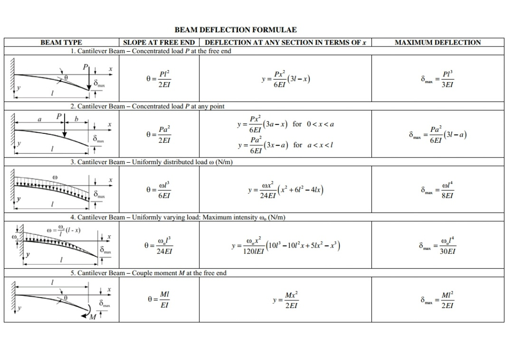

Approximating compliant beams with the pseudo-rigid-body model
import sympyq = sympy.Symbol('q')
d = sympy.Symbol('d')
L = sympy.Symbol('L')
P = sympy.Symbol('P')
h = sympy.Symbol('h')
b = sympy.Symbol('b')
E = sympy.Symbol('E')
x = sympy.Symbol('x')subs = {}
#subs[k]=1000
subs[P]=.1
subs[L]=.1
subs[b]=.01
subs[h]=.01
subs[E]=1e7
subs[x]=.5
Approximating a cantilever with a single revolute joint
Arbitrarily placing a compliant joint halfway along its length can be used to approximate a cantilever beam.
Euler-Bernoulli Equations
Point Load at the end:
\[d = \frac{PL^3}{3EI}\]
Cross-sectional moment of inertia for a rectangle
\[I = \frac{bh^3}{12}\]
Inserted: \[d = \frac{4PL^3h^3}{Eb}\]
\[E_{rectangle} = \frac{4PL^3h^3}{db}\] \[E = \frac{PL^3}{3dI}\]
Cross sectional moment of inertia for a rectangle
I = b*h**3/12d1 = P*L**3/3/E/I
d1.subs(subs)\(\displaystyle 0.004\)
q1 = P*L**2/2/E/Iq1.subs(subs)\(\displaystyle 0.06\)
2-Link Approximation
Matching Displacement
x at .5
\[d = L(1-x) \sin{\theta}\]
\[\tau=k\theta = PL(1-x)\cos\theta \]
Using a small Angle approximation, \(\cos\theta = 1\)
\[k\theta = PL(1-x)\] \[\theta = \frac{PL(1-x)}{k}\] \[d=L(1-x)\sin\left(\frac{PL(1-x)}{k}\right)\]
\[d=L(1-x)\sin\left(\frac{PL(1-x)}{k}\right)=\frac{PL^3}{3EI}\] \[(1-x)\sin\left(\frac{PL(1-x)}{k}\right)=\frac{PL^2}{3EI}\]
\[\frac{PL(1-x)}{k}=\sin^{-1} \left(\frac{PL^2}{3EI(1-x)}\right)\]
\[{k}=\frac{PL(1-x)}{\sin^{-1} \left(\frac{PL^2}{3EI(1-x)}\right)}\]
k1 = P*L*(1-x)/(sympy.asin(P*L**2/(3*E*I*(1-x))))
k1.subs(subs)\(\displaystyle 0.0624332120451467\)
The displacement matches
d2 = L*(1-x)*sympy.sin(P*L*(1-x)/k1)
d2.subs(subs)\(\displaystyle 0.004\)
But the orientation does not
q2 = P*L*(1-x)/k1q2.subs(subs)\(\displaystyle 0.080085580033659\)
Matching Theta
From Cantilever beam equations:
\[\theta = \frac{PL^2}{2EI}\]
From approximation above, again assuming small angles:
\[\theta = \frac{PL(1-x)}{k}\]
\[\theta = \frac{PL^2}{2EI}= \frac{PL(1-x)}{k}\] \[\frac{L}{2EI}= \frac{1-x}{k}\] \[k=\frac{2EI(1-x)}{L}\]
Using the value solved for to equate orientation:
k2 = 2*E*I*(1-x)/(L)Now orientation matches
q3 = P*L*(1-x)/k2q3.subs(subs)\(\displaystyle 0.06\)
But displacement does not
d3 = L*(1-x)*sympy.sin(P*L*(1-x)/k2)d1.subs(subs)\(\displaystyle 0.004\)
d3.subs(subs)\(\displaystyle 0.00299820032397223\)
Matching Both
Now asking the question, what location x permits you to accurately model the deflection and angle of a cantilever beam with a single joint?
del subs[x]Create an error vector
error = []
error.append(d1-d2)
error.append(q1-q2)
error= sympy.Matrix(error)
error = error.subs(subs)
error\(\displaystyle \left[\begin{matrix}0\\0.06 - \operatorname{asin}{\left(\frac{0.04}{1 - x} \right)}\end{matrix}\right]\)
import optimization toolkit
import scipy.optimizeTurn “error” into a function that can be run using the sympy.lambdify function
f = sympy.lambdify((x),error)Scipy.optimize.minimize needs args supplied as a list, so define a new wrapper function that formats inputs correctly
def f2(args):
a = f(*args)
b = (a**2).sum()
return bsol = scipy.optimize.minimize(f2,[.25])
sol fun: 2.0974856866229214e-09
hess_inv: array([[65.11062045]])
jac: array([-8.23593665e-06])
message: 'Optimization terminated successfully.'
nfev: 14
nit: 4
njev: 7
status: 0
success: True
x: array([0.33242421])Now add x back to the list of substitutions
subs[x]=sol.x[0]So a virtual joint at x=1/3 correctly approximates displacement and orientation.
d2.subs(subs)\(\displaystyle 0.004\)
q2.subs(subs)\(\displaystyle 0.0599542016846748\)